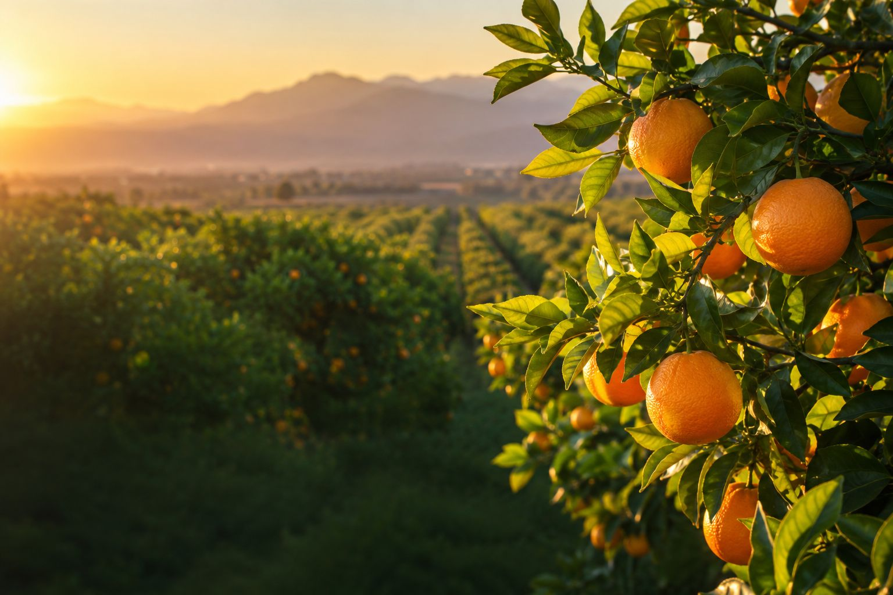
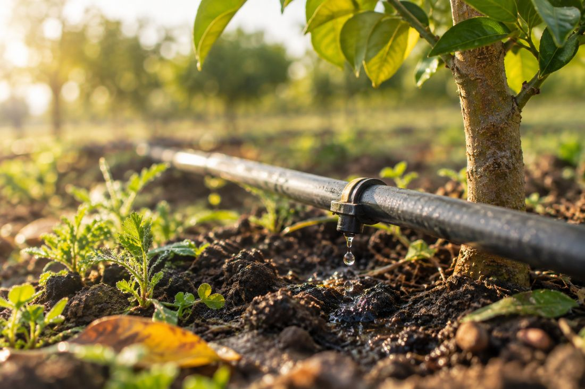

Climat et pression sanitaire
Conditions en temps réel, prévisions et irrigation calculée à partir de l'évapotranspiration et du déficit de pression de vapeur. La pression maladies et ravageurs est suivie pour la culture et son stade.

Imagerie satellite, conditions climatiques et analyses de laboratoire réunies sur une même exploitation pour écarter les fausses alertes et vous dire quoi corriger, et où
Imagerie
satellite
Données
climatiques
Analyses de
laboratoire
Fausses alertes
écartées
Priorités
par secteur
Actions
recommandées
La méthode
Firmaty réunit sur chaque secteur de votre exploitation trois flux de données qui ne se parlent jamais d'habitude : l'imagerie satellite, les conditions climatiques rapportées au stade de la culture, et vos analyses de laboratoire.
Notre moteur d'analyse qualifie chaque écart. Ce qui relève du normal est écarté, ce qui mérite votre attention remonte en tête des priorités, avec la correction à apporter.
En savoir plusPourquoi Firmaty ?
Conditions en temps réel, prévisions et irrigation calculée à partir de l'évapotranspiration et du déficit de pression de vapeur. La pression maladies et ravageurs est suivie pour la culture et son stade.
Vos rapports sont confrontés aux cibles de la culture. La plateforme détecte les antagonismes nutritionnels, ces blocages où un élément présent devient inaccessible à la plante.
Chaque secteur est suivi image après image, avec des seuils qui distinguent l'optimal, l'acceptable et le critique.
Secteurs configurés, services actifs, actions à traiter. Vous voyez d'un coup d'œil où en est chaque partie de l'exploitation et ce qui demande votre attention cette semaine, avec l'historique daté de chaque décision.

Découvrez nos écrans

Démonstration
Dites-nous ce que vous pilotez, on vous montre ce que la plateforme en tire.
L'historique satellite est rétroactif : nous analysons vos secteurs sur les mois écoulés, sans capteur ni matériel au champ et sans attendre. Indiquez vos cultures, votre région et la surface pilotée dans votre message.